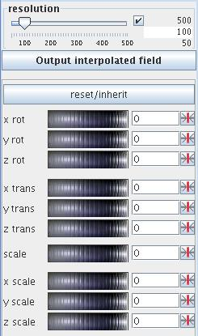
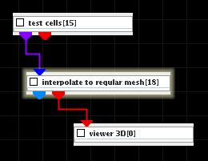
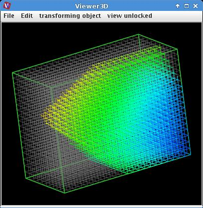

Interpolate to regular mesh
The module interpolates data of a regular or irregular input field on mesh points of a user defined regular mesh.
Input data
At input the module requires a regular or irregular 3D 3-space or 2D 2-space field with explicit coordinates.
Output data
At output the module delivers a regular field and a geometry object.
Computation parameters

The resolution slider sets the resolution of the regular mesh. Resolution is equal in all coordinate directions. If check box on the right hand side of the slider is on the user is able to change minimum, maximum and current value. By default resolution is 100.
In order to generate module output press Output interpolated field button. The new regular field values are interpolated from the original field. These values appear only there where they are available from the input field. Therefore portions of the new mesh outside of the original field have no values.
The extent of the new mesh is presented by a green shaded box, it appears immediately. The button has to be pressed in order to finalize any transformation and to generate module output.
The reset/inherit button allows to withdraw all transformations. Again, in order to generate module output press Output interpolated field button.
The new mesh can be transformed by:
using the appropriate wheel or typing values into the appropriate text fields on their right hand sides. Particular transformations can be reset using the small buttons on the right hand side next to the text fields.
Each transformation is immediately shown by transforming the surrounding green box, but is finalized after pressing the Output interpolated field button.
Presentation parameters
Presentation parameters are described in the common interfaces section under the Presentation Panel entry.
Example

Take test cells module from test objects library, interpolate to regular mesh module from data filters library and connect them to viewer 3D module. In interpolate to regular mesh module GUI choose line grid and fine.
